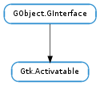

| Subclasses: | Gtk.Button, Gtk.MenuItem, Gtk.RecentChooserMenu, Gtk.Switch, Gtk.ToolItem |
|---|
| do_set_related_action(action) | |
| get_related_action() | |
| get_use_action_appearance() | |
| set_related_action(action) | |
| set_use_action_appearance(use_appearance) | |
| sync_action_properties(action) |
| Name | Type | Flags | Description |
|---|---|---|---|
| Gtk.Action | r/w | The action this activatable will activate and receive updates from | |
| use-action-appearance | bool | r/w | Whether to use the related actions appearance properties |
None
Bases: GObject.GInterface
Activatable widgets can be connected to a Gtk.Action and reflects the state of its action. A Gtk.Activatable can also provide feedback through its action, as they are responsible for activating their related actions.
Implementing Gtk.Activatable
When extending a class that is already Gtk.Activatable ; it is only necessary to implement the Gtk.Activatable- >sync_action_properties() and Gtk.Activatable- >update() methods and chain up to the parent implementation, however when introducing a new Gtk.Activatable class; the Gtk.Activatable :related-action and Gtk.Activatable :use-action-appearance properties need to be handled by the implementor. Handling these properties is mostly a matter of installing the action pointer and boolean flag on your instance, and calling Gtk.Activatable.do_set_related_action () and Gtk.Activatable.sync_action_properties () at the appropriate times.
A class fragment implementing Gtk.Activatable
enum {
...
PROP_ACTIVATABLE_RELATED_ACTION,
PROP_ACTIVATABLE_USE_ACTION_APPEARANCE
}
struct _FooBarPrivate
{
...
GtkAction *action;
gboolean use_action_appearance;
};
...
static void foo_bar_activatable_interface_init (GtkActivatableIface *iface);
static void foo_bar_activatable_update (GtkActivatable *activatable,
GtkAction *action,
const gchar *property_name);
static void foo_bar_activatable_sync_action_properties (GtkActivatable *activatable,
GtkAction *action);
...
static void
foo_bar_class_init (FooBarClass *klass)
{
...
g_object_class_override_property (gobject_class, PROP_ACTIVATABLE_RELATED_ACTION, "related-action");
g_object_class_override_property (gobject_class, PROP_ACTIVATABLE_USE_ACTION_APPEARANCE, "use-action-appearance");
...
}
static void
foo_bar_activatable_interface_init (GtkActivatableIface *iface)
{
iface->update = foo_bar_activatable_update;
iface->sync_action_properties = foo_bar_activatable_sync_action_properties;
}
... Break the reference using gtk_activatable_do_set_related_action()...
static void
foo_bar_dispose (GObject *object)
{
FooBar *bar = FOO_BAR (object);
FooBarPrivate *priv = FOO_BAR_GET_PRIVATE (bar);
...
if (priv->action)
{
gtk_activatable_do_set_related_action (GTK_ACTIVATABLE (bar), NULL);
priv->action = NULL;
}
G_OBJECT_CLASS (foo_bar_parent_class)->dispose (object);
}
... Handle the "related-action" and "use-action-appearance" properties ...
static void
foo_bar_set_property (GObject *object,
guint prop_id,
const GValue *value,
GParamSpec *pspec)
{
FooBar *bar = FOO_BAR (object);
FooBarPrivate *priv = FOO_BAR_GET_PRIVATE (bar);
switch (prop_id)
{
...
case PROP_ACTIVATABLE_RELATED_ACTION:
foo_bar_set_related_action (bar, g_value_get_object (value));
break;
case PROP_ACTIVATABLE_USE_ACTION_APPEARANCE:
foo_bar_set_use_action_appearance (bar, g_value_get_boolean (value));
break;
default:
G_OBJECT_WARN_INVALID_PROPERTY_ID (object, prop_id, pspec);
break;
}
}
static void
foo_bar_get_property (GObject *object,
guint prop_id,
GValue *value,
GParamSpec *pspec)
{
FooBar *bar = FOO_BAR (object);
FooBarPrivate *priv = FOO_BAR_GET_PRIVATE (bar);
switch (prop_id)
{
...
case PROP_ACTIVATABLE_RELATED_ACTION:
g_value_set_object (value, priv->action);
break;
case PROP_ACTIVATABLE_USE_ACTION_APPEARANCE:
g_value_set_boolean (value, priv->use_action_appearance);
break;
default:
G_OBJECT_WARN_INVALID_PROPERTY_ID (object, prop_id, pspec);
break;
}
}
static void
foo_bar_set_use_action_appearance (FooBar *bar,
gboolean use_appearance)
{
FooBarPrivate *priv = FOO_BAR_GET_PRIVATE (bar);
if (priv->use_action_appearance != use_appearance)
{
priv->use_action_appearance = use_appearance;
gtk_activatable_sync_action_properties (GTK_ACTIVATABLE (bar), priv->action);
}
}
... call gtk_activatable_do_set_related_action() and then assign the action pointer,
no need to reference the action here since gtk_activatable_do_set_related_action() already
holds a reference here for you...
static void
foo_bar_set_related_action (FooBar *bar,
GtkAction *action)
{
FooBarPrivate *priv = FOO_BAR_GET_PRIVATE (bar);
if (priv->action == action)
return;
gtk_activatable_do_set_related_action (GTK_ACTIVATABLE (bar), action);
priv->action = action;
}
... Selectively reset and update activatable depending on the use-action-appearance property ...
static void
gtk_button_activatable_sync_action_properties (GtkActivatable *activatable,
GtkAction *action)
{
GtkButtonPrivate *priv = GTK_BUTTON_GET_PRIVATE (activatable);
if (!action)
return;
if (gtk_action_is_visible (action))
gtk_widget_show (GTK_WIDGET (activatable));
else
gtk_widget_hide (GTK_WIDGET (activatable));
gtk_widget_set_sensitive (GTK_WIDGET (activatable), gtk_action_is_sensitive (action));
...
if (priv->use_action_appearance)
{
if (gtk_action_get_stock_id (action))
foo_bar_set_stock (button, gtk_action_get_stock_id (action));
else if (gtk_action_get_label (action))
foo_bar_set_label (button, gtk_action_get_label (action));
...
}
}
static void
foo_bar_activatable_update (GtkActivatable *activatable,
GtkAction *action,
const gchar *property_name)
{
FooBarPrivate *priv = FOO_BAR_GET_PRIVATE (activatable);
if (strcmp (property_name, "visible") == 0)
{
if (gtk_action_is_visible (action))
gtk_widget_show (GTK_WIDGET (activatable));
else
gtk_widget_hide (GTK_WIDGET (activatable));
}
else if (strcmp (property_name, "sensitive") == 0)
gtk_widget_set_sensitive (GTK_WIDGET (activatable), gtk_action_is_sensitive (action));
...
if (!priv->use_action_appearance)
return;
if (strcmp (property_name, "stock-id") == 0)
foo_bar_set_stock (button, gtk_action_get_stock_id (action));
else if (strcmp (property_name, "label") == 0)
foo_bar_set_label (button, gtk_action_get_label (action));
...
}
| Parameters: | action (Gtk.Action) – the Gtk.Action to set |
|---|
This is a utility function for Gtk.Activatable implementors.
When implementing Gtk.Activatable you must call this when handling changes of the Gtk.Activatable :related-action, and you must also use this to break references in GObject.Object- >dispose().
This function adds a reference to the currently set related action for you, it also makes sure the Gtk.Activatable- >update() method is called when the related Gtk.Action properties change and registers to the action’s proxy list.
Be careful to call this before setting the local copy of the Gtk.Action property, since this function uses Gtk.Activatable.get_related_action () to retrieve the previous action
| Returns: | the related Gtk.Action if one is set. |
|---|---|
| Return type: | Gtk.Action |
Gets the related Gtk.Action for activatable.
| Returns: | whether activatable uses its actions appearance. |
|---|---|
| Return type: | bool |
Gets whether this activatable should reset its layout and appearance when setting the related action or when the action changes appearance.
| Parameters: | action (Gtk.Action) – the Gtk.Action to set |
|---|
Sets the related action on the activatable object.
Gtk.Activatable implementors need to handle the Gtk.Activatable :related-action property and call Gtk.Activatable.do_set_related_action () when it changes.
| Parameters: | use_appearance (bool) – whether to use the actions appearance |
|---|
Sets whether this activatable should reset its layout and appearance when setting the related action or when the action changes appearance
Gtk.Activatable implementors need to handle the Gtk.Activatable :use-action-appearance property and call Gtk.Activatable.sync_action_properties () to update activatable if needed.
| Parameters: | action (Gtk.Action or None) – the related Gtk.Action or None |
|---|
This is called to update the activatable completely, this is called internally when the Gtk.Activatable :related-action property is set or unset and by the implementing class when Gtk.Activatable :use-action-appearance changes.